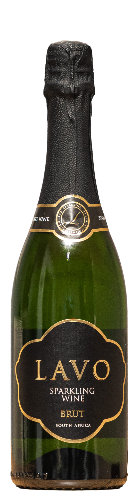

A dry celebration of citrus, kiwi and watermelon — ending in a smooth, buttery finish.

Lavo Sparkling Brut · NVThe Lavo Sparkling Brut is a dry sparkling wine produced at Orange River Cellars from the Green Kalahari, Northern Cape. An unexpected surprise with with citrus and nutty aromas on the nose, followed by watermelon and kiwi flavours on the palate. The wine has a smooth, buttery finish that lingers long after each sip — perfectly celebratory and endlessly refreshing.
The grapes come from an 18 year-old vineyard, machine harvested early in the morning during the first week of March at 21.5°Brix — ensuring the ideal balance of fruit and acidity.
Only free run juice was used for fermentation, which was carried out at a cool 16°C to preserve the delicate citrus and fruit aromas that define this wine.
After fermentation, the wine was left on the thin lees with frequent mixing of wine and lees until it was ready for bottling — adding texture, complexity and the characteristic buttery finish.
Produced at Orange River Cellars — from the Green Kalahari's finest vineyards, expressive of the Northern Cape's unique climate and terroir.
"A celebration of bubbles. Watermelon and kiwi that ends in a buttery finish."
Complete tasting notes, technical analysis and
winemaking details for the Lavo Sparkling Brut.